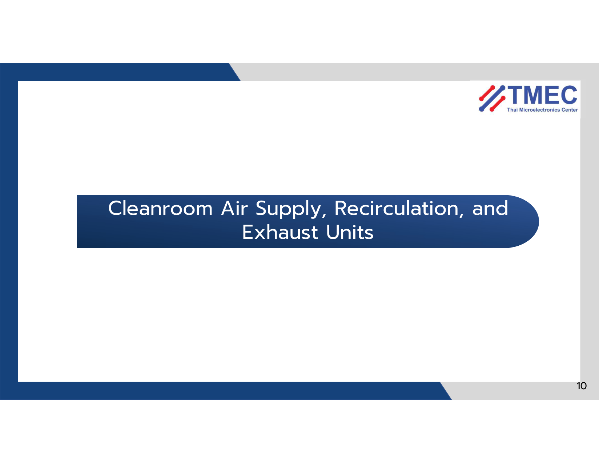
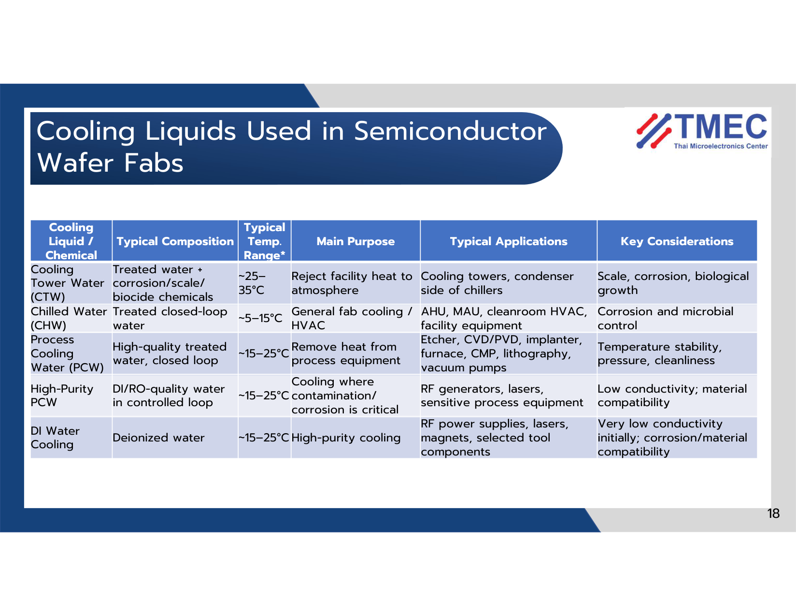
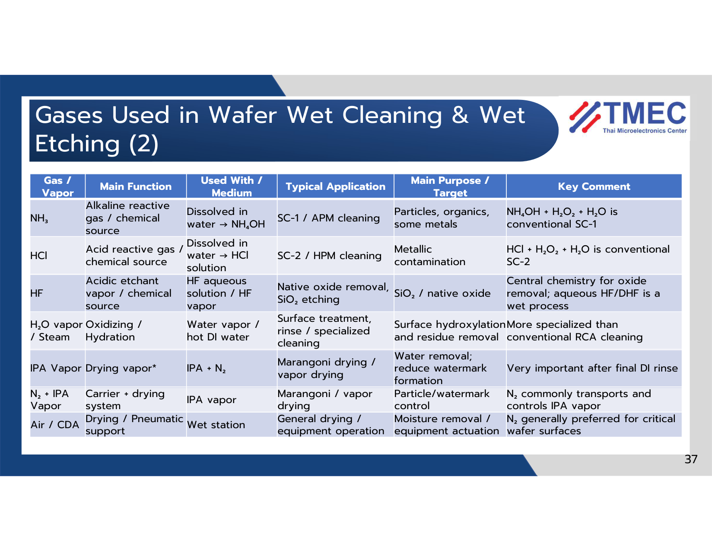
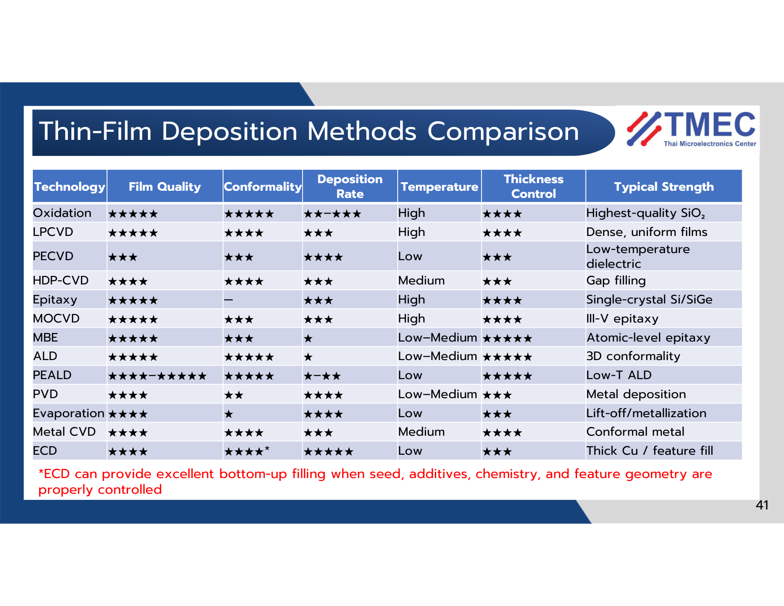
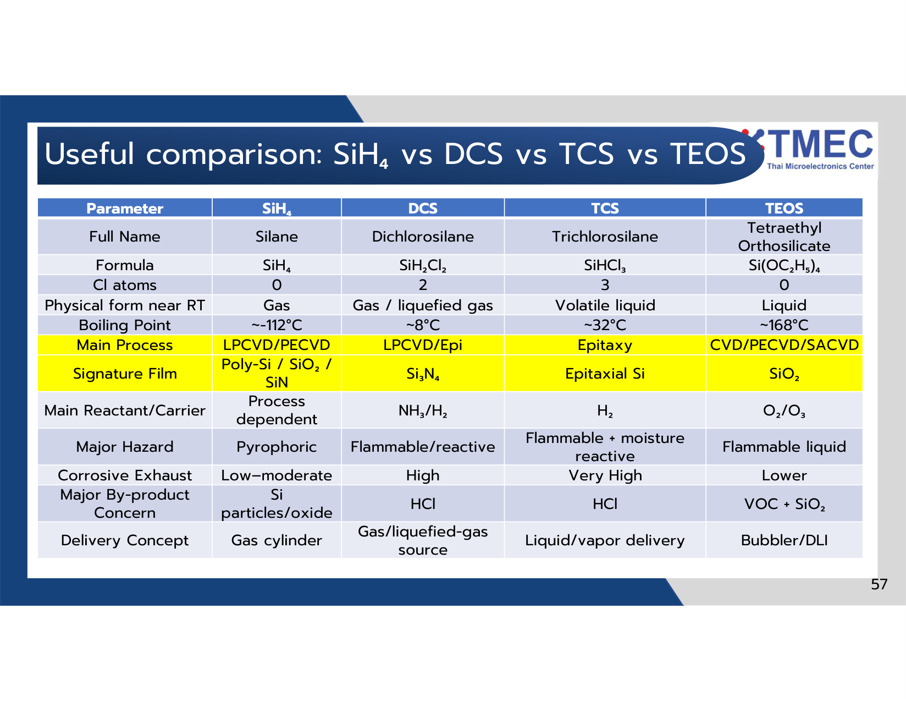
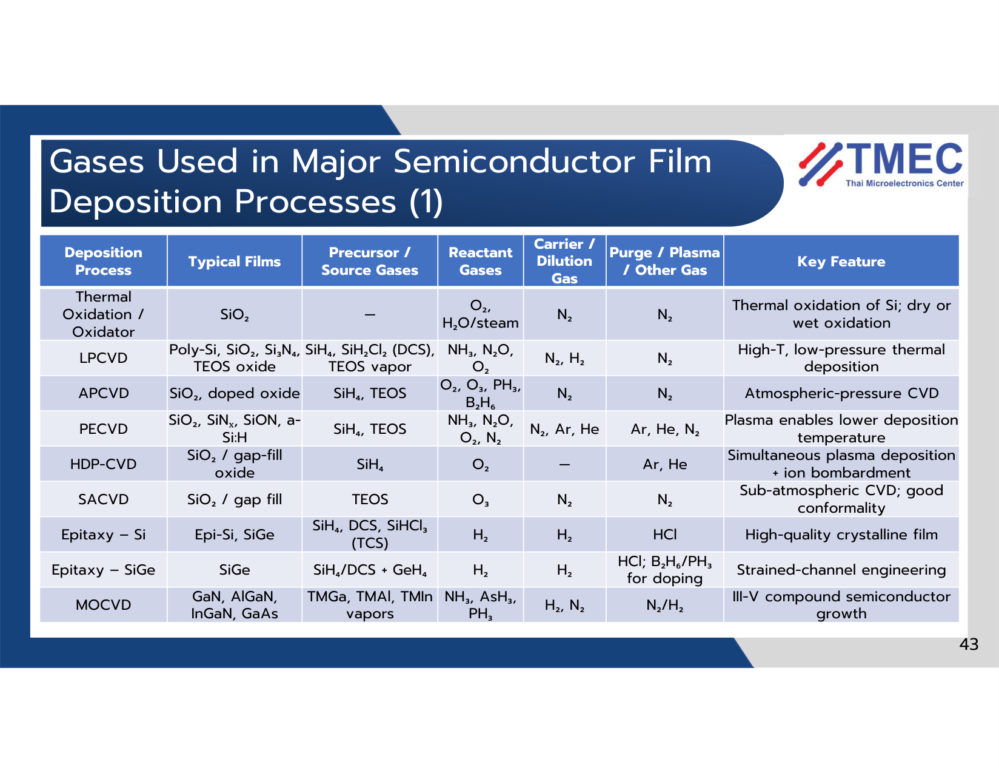
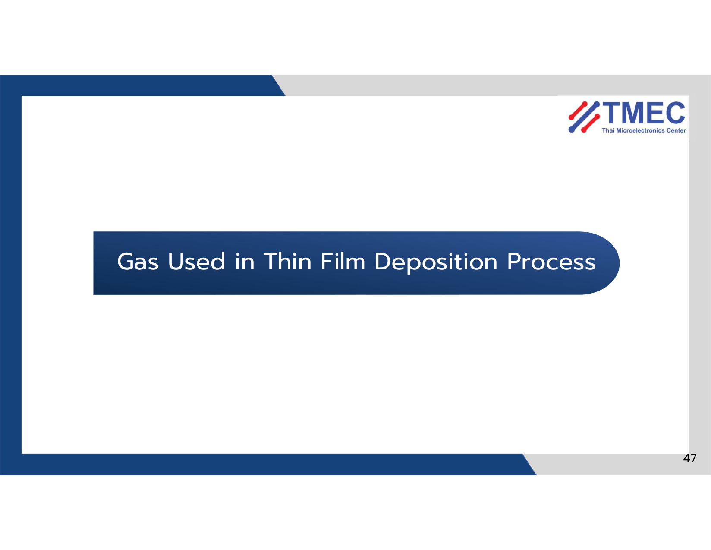
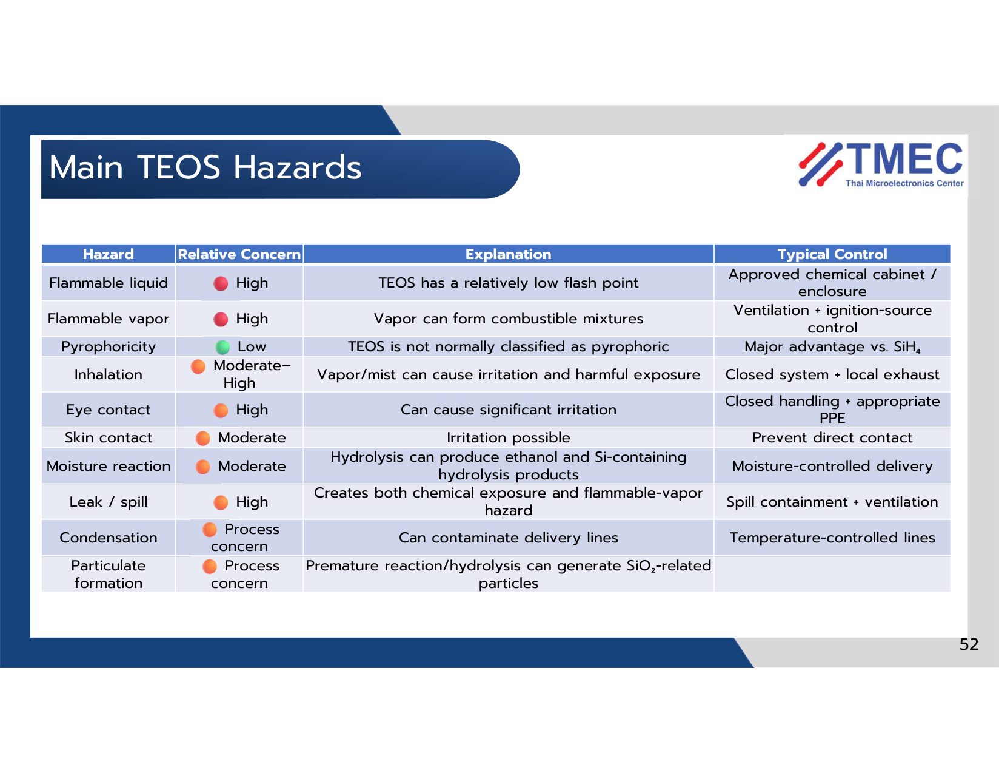
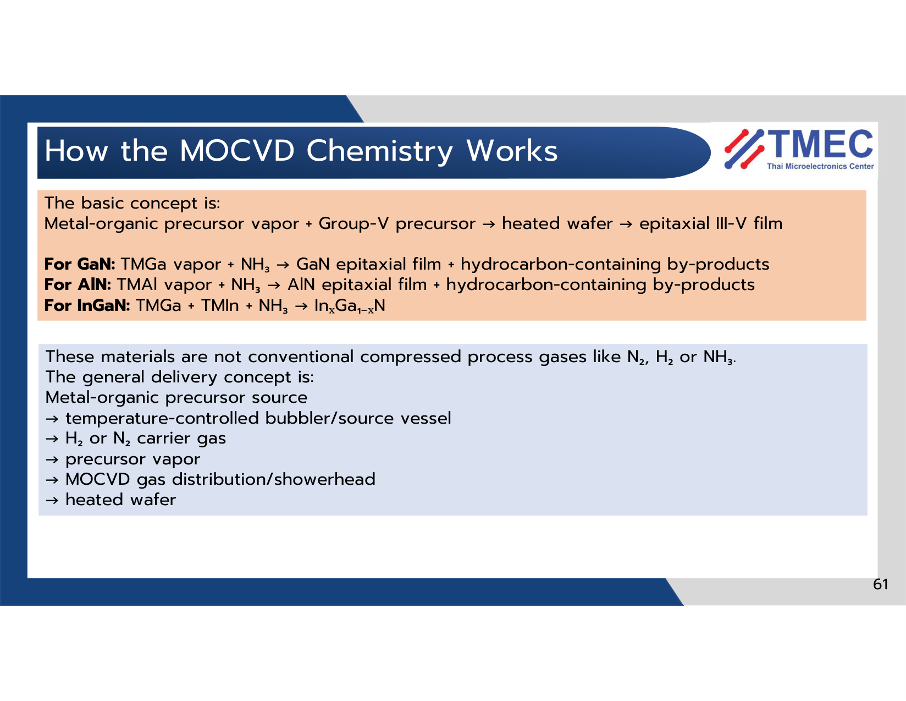

คลังคำอธิบายสไลด์ทุกหน้าอย่างละเอียด (302 สไลด์ ฉบับภาษาไทย)
คำอธิบายเจาะลึกทุกภาพ กราฟ ตาราง ปฏิกิริยาเคมี KaTeX และจุดเน้นย้ำข้อสอบของ ดร. นิติ เอี่ยมถิ (TMEC) พร้อมระบบค้นหา คัดกรอง และซูมภาพ HD
Wafer Cleaning & Surface Contamination
ศาสตร์แห่งการทำความสะอาดพื้นผิวแผ่นเวเฟอร์ซิลิกอน: การวิเคราะห์และกำจัดสิ่งปนเปื้อน 5 ประเภท, มาตรฐานน้ำบริสุทธิ์สูงยิ่งยวด (UPW / CO₂-DIW), เคมีภัณฑ์ของกระบวนการ RCA Clean (SPM, SC-1, DHF, SC-2), และเทคโนโลยีการทำแห้ง Marangoni Drying ป้องกันรอยคราบน้ำ
การจำแนกและผลกระทบของสิ่งปนเปื้อน 5 ประเภท (The 5 Contamination Classes)
ในกระบวนการผลิตระดับนาโนเมตร สิ่งปนเปื้อนขนาดเล็กกว่า 1 ใน 10 ของความกว้างเกตสามารถทำลายชิปทั้งตัวได้อย่างสิ้นเชิง
ฝุ่นและเศษวัสดุระดับซับไมครอน
เกิดจากคน, ชิ้นส่วนเครื่องจักรขัดสี, ละอองเคมี ยึดเกาะแน่นด้วยแรง van der Waals, แรงไฟฟ้าสถิต, และแรงตึงผิวฟิล์มของเหลว (Capillary force)
ไอออนอัลคาไลบวก (Na⁺, K⁺, Li⁺)
มาจากเหงื่อ, น้ำประปา, ผงเคมี ไอออนมีขนาดเล็กและเคลื่อนที่ (Drift) ได้อย่างรวดเร็วในเนื้อฉนวน Gate Oxide (SiO₂) ภายใต้สนามไฟฟ้า
โลหะทรานซิชัน (Fe, Cu, Ni, Cr, Zn)
แทรกตัวในผลึกซิลิกอน สร้างระดับพลังงานลึก (Deep-level traps) กลาง Bandgap กลายเป็น Shockley-Read-Hall (SRH) Recombination Centers
ฟิล์มไฮโดรคาร์บอนและคราบรีซิสต์
มาจากน้ำมันปั๊ม, กล่องพลาสติก FOUP ปล่อยสาร DOP (Dioctyl phthalate), คราบโฟโต้รีซิสต์ตกค้าง เคลือบผิวหน้าทำให้มุมสัมผัสของน้ำแปรปรวน
ชั้นฟิล์ม SiO_x หนา 1-2 nm ที่เกิดขึ้นเองในอากาศ
เกิดจากการสัมผัสออกซิเจนและความชื้นในคลีนรูม โครงสร้างไม่สมบูรณ์ (Non-stoichiometric) มีความหยาบระดับอะตอม และมีสิ่งปนเปื้อนฝังอยู่ภายใน


น้ำบริสุทธิ์ยิ่งยวด (Ultra-Pure Water: UPW) และน้ำลดไฟฟ้าสถิต (CO₂-DI Water)
น้ำบริสุทธิ์เป็นสารเคมีที่ถูกใช้งานมากที่สุดในโรงงานเซมิคอนดักเตอร์ (กว่า 10,000 ลิตรต่อเวเฟอร์ 1 แผ่น)
💎 สเปกทางทฤษฎีของ UPW ตามมาตรฐาน SEMI F63:
ที่อุณหภูมิ 25°C น้ำบริสุทธิ์สูงสุดทางทฤษฎีจะมีการแตกตัวตามธรรมชาติเพียงเล็กน้อยตามค่าคงที่สมดุล $$K_w = [\text{H}^+][\text{OH}^-] = 1.008 \times 10^{-14}\text{ mol}^2/\text{L}^2$$ ส่งผลให้มีค่าความต้านทานไฟฟ้าจำเพาะสูงสุดในทางทฤษฎีเท่ากับ:
- TOC (Total Organic Carbon): ต่ำกว่า $$1\text{ ppb}$$ (ป้องกันฟิล์มคาร์บอนเคลือบผิว)
- Dissolved Oxygen (DO): ต่ำกว่า $$1-5\text{ ppb}$$ (ป้องกันการเกิด Native Oxide ระหว่างล้าง)
- อนุภาคฝุ่น (>0.05 µm): น้อยกว่า 1 อนุภาคต่อลูกบาศก์เซนติเมตร
⚡ ทำไมต้องใช้ CO₂-DI Water ในขั้นตอน Dicing & Grinding?
น้ำ UPW ธรรมดาเป็นฉนวนไฟฟ้าที่ดีเยี่ยม เมื่อใบตัดเพชรหมุนด้วยความเร็วสูงเฉือนแผ่นเวเฟอร์ จะเกิดการเสียดสีสะสมประจุไฟฟ้าสถิตมหาศาล (Triboelectric charging) ซึ่งหากเกิดประกายไฟ Electrostatic Discharge (ESD) ชิปจะไหม้เสียหายทันที
การเติมก๊าซ CO₂ บริสุทธิ์ประมาณ 10-20 ppm ช่วยให้เกิดไอออนนำไฟฟ้า ลด Resistivity ลงมาอยู่ที่ 0.1 - 0.2 MΩ·cm สามารถระบายประจุไฟฟ้าสถิตลงกราวด์ได้อย่างปลอดภัย และเมื่อแผ่นแห้ง CO₂ จะระเหยกลายเป็นก๊าซไปจนหมด โดยไม่ทิ้งคราบไอออนโลหะตกค้างเหมือนการเติมเกลืออื่น


กลไกทางเคมีของกระบวนการล้าง RCA Clean (SPM, SC-1, DHF, SC-2)
พัฒนาขึ้นโดย Werner Kern แห่ง RCA Laboratories (1965) และยังคงเป็นรากฐานหลักของอุตสาหกรรม Fab ทั่วโลกจนถึงปัจจุบัน
อัตราส่วน: $$\text{H}_2\text{SO}_4 (96\%) : \text{H}_2\text{O}_2 (30\%) = 4:1 \text{ ถึง } 5:1$$ ที่อุณหภูมิ $$100-130^\circ\text{C}$$ (ปฏิกิริยาคายความร้อนสูงมาก Exothermic) จะสร้าง กรดเปอร์ออกซีโมโนซัลฟิวริก (Caro's acid: $$\text{H}_2\text{SO}_5$$) ซึ่งมีพลังออกซิไดซ์สารอินทรีย์สูงที่สุด:
อัตราส่วน: $$\text{NH}_4\text{OH} : \text{H}_2\text{O}_2 : \text{H}_2\text{O} = 1:1:5 \text{ ถึง } 1:2:10$$ ที่อุณหภูมิ $$70-80^\circ\text{C}$$ ($$\text{pH} \approx 10-11$$) ทำงานด้วย 2 กลไกผสานกัน:
- กลไกเคมี (Micro-undercutting): $$\text{H}_2\text{O}_2$$ ออกซิไดซ์ Si เกิด $$\text{SiO}_2$$ บางๆ และ $$\text{NH}_4\text{OH}$$ ค่อยๆ กัดละลายออกไซด์ออกประมาณ $$1-2\text{ nm/min}$$ เพื่อตัดฐานยึดเกาะของอนุภาคให้หลุดลอยออก
- กลไกไฟฟ้าสถิต (Zeta Potential): ที่ pH ด่างจัด (10-11) ซึ่งอยู่ห่างจากจุด IEP ของซิลิกา (IEP ≈ 2) ทั้งผิวหน้าเวเฟอร์ $$\text{SiO}_2$$ และอนุภาคส่วนใหญ่จะมี ศักย์ซีต้าเป็นลบสูง ($$\zeta < -40\text{ ถึง } -60\text{ mV}$$) เกิดแรงผลักไฟฟ้าสถิตอย่างรุนแรงตามทฤษฎี DLVO ป้องกันไม่ให้อนุภาคตกกลับมาเกาะติดซ้ำ (Zero Re-deposition)
อัตราส่วน: $$\text{HF} : \text{H}_2\text{O} = 1:50 \text{ ถึง } 1:100$$ (ความเข้มข้น 0.5% - 1.0% HF ที่อุณหภูมิห้อง 25°C) ทำหน้าที่ลอกชั้นออกไซด์เคมีที่สร้างขึ้นจาก SC-1 ออกจนหมด และทิ้งพันธะพื้นผิวเป็น Hydrogen-terminated Silicon ($$\text{Si-H}$$) ทำให้ผิวหน้าเวเฟอร์มีสมบัติ ไม่ชอบน้ำ (Hydrophobic: Contact Angle > 75°)
อัตราส่วน: $$\text{HCl} : \text{H}_2\text{O}_2 : \text{H}_2\text{O} = 1:1:6$$ ที่อุณหภูมิ $$70-80^\circ\text{C}$$ ($$\text{pH} < 2$$) ทำหน้าที่ออกซิไดซ์โลหะหนัก (Fe, Cu, Ni, Al, Zn) และจับกับคลอไรด์ไอออนกลายเป็นสารประกอบเชิงซ้อนที่ละลายน้ำได้ดีเยี่ยม (Soluble Metal-Chloride Complexes):
*หมายเหตุสำคัญ: ความเป็นกรดจัด ($$\text{pH} < 2$$) มีความสำคัญสูงสุดในการป้องกันไม่ให้ไอออนโลหะเกิดปฏิกิริยาไฮโดรไลซิสจนตกตะกอนกลับลงบนผิวในรูป Metal Hydroxide (เช่น $$\text{Fe(OH)}_3\downarrow$$)




เทคโนโลยีการทำให้แห้ง: Marangoni Drying ป้องกันรอยคราบน้ำ (Watermarks)
การอบแห้งแผ่นเวเฟอร์เป็นด่านสุดท้ายที่มีความสำคัญสูงสุดในการป้องกันข้อบกพร่องระดับหายนะ
⚠️ ปัญหาของการปั่นแห้งแบบหมุนเหวี่ยง (Spin-Rinse Drying: SRD):
การเหวี่ยงด้วยแรงหนีศูนย์กลางจะทำให้ฟิล์มน้ำแตกตัวออกเป็น "หยดน้ำเดี่ยวๆ" (Droplets) ตกค้างอยู่ตามผิวหน้า โดยเฉพาะบนผิวแบบ Hydrophobic ที่ผ่านการล้างด้วย DHF
ในหยดน้ำเดี่ยวที่ค้างอยู่ ออกซิเจนในอากาศจะทำปฏิกิริยากับผลึกซิลิกอนเกิดการละลายกลายเป็นกรดซิลิซิก ($$\text{H}_2\text{SiO}_3$$) เมื่อหยดน้ำระเหยหมด กรดซิลิซิกจะตกผลึกกลายเป็น รอยคราบน้ำ (Watermarks) ที่ไม่สามารถล้างออกได้ด้วยน้ำธรรมดา และทำลายลวดลายวงจร
✨ ปรากฏการณ์ Marangoni Effect แก้ปัญหานี้อย่างไร?
เทคโนโลยี Marangoni Drying ปล่อยไอระเหยของ Isopropyl Alcohol (IPA) ผสมกับก๊าซไนโตรเจน ($$\text{N}_2$$) เข้าสัมผัสกับขอบฟิล์มน้ำขณะที่เวเฟอร์กำลังถูกดึงขึ้นจากถังน้ำช้าๆ:
- IPA ละลายลงในผิวน้ำด้านบน ทำให้แรงตึงผิวลดลงอย่างมาก ($$\sigma_{IPA} \approx 22\text{ mN/m}$$)
- น้ำบริสุทธิ์ด้านล่างยังคงมีแรงตึงผิวสูงตามธรรมชาติ ($$\sigma_{water} \approx 72\text{ mN/m}$$)
- เกิดการไล่ระดับความแตกต่างของแรงตึงผิว Surface Tension Gradient ($$d\sigma/dx$$) สร้างแรงดึงฟิล์มน้ำด้านบนขึ้นสู่อากาศอย่างต่อเนื่อง แผ่นฟิล์มน้ำจึงถูกดึงร่นออกจากผิวเวเฟอร์อย่างเกลี้ยงเกลาโดยไม่แตกตัวเป็นหยดน้ำเดี่ยว ทำให้ ไร้รอยคราบน้ำอย่างสมบูรณ์แบบ 100%!

🎯 แบบฝึกหัดทบทวนบทที่ 1
ทดสอบความเข้าใจกับข้อสอบจำลองบทที่ 1 (10 ข้อ) และแนวข้อสอบอัตนัย
เส้นทางการผลิตแผ่นชิปเซมิคอนดักเตอร์ (Virtual Fab Walkthrough)
คลิกเลือกขั้นตอนในสายการผลิตเพื่อดูสารเคมี ก๊าซพิเศษ และภาพจำลองหน้าตัดชั้นฟิล์ม (Wafer Cross-Section)